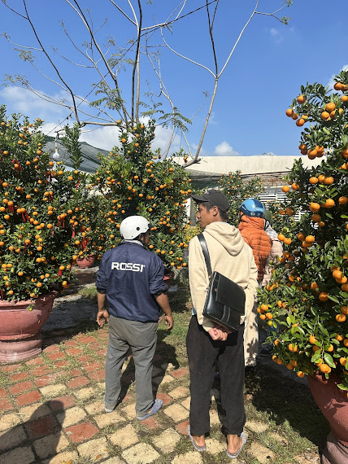
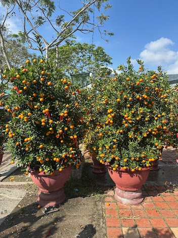

Vườn Quất Tri - Tài tại Điện Bàn Đông, Quảng Nam chuyên cung cấp quất cảnh tết cho cả hai phân khúc: bán lẻ cho gia đình và bán sỉ cho đại lý, công ty, chợ hoa. Bài viết này giải thích rõ sự khác biệt, điều kiện áp dụng giá sỉ và quy trình đặt hàng từ đầu đến cuối.
1. Bán lẻ và bán sỉ quất tết — điểm khác nhau là gì?
Nhiều khách hàng nhầm lẫn giữa hai hình thức này. Hiểu đúng giúp bạn chọn đúng kênh mua và tránh thất vọng khi so sánh giá.
- Bán lẻ: từ 1 chậu trở lên, giá niêm yết theo từng loại cây, giao hàng tận nhà Đà Nẵng và Hội An, bảo hành cây 3 ngày sau nhận.
- Bán sỉ: từ 10 chậu trở lên, giá thỏa thuận theo số lượng và chủng loại, hỗ trợ xe tải chở cây cỡ lớn, phù hợp đại lý, chợ hoa, công ty.
Giá sỉ thường thấp hơn giá lẻ từ 15–30% tùy số lượng và thời điểm đặt. Đặt càng sớm — giá càng tốt.

2. Đặt hàng sỉ: nên đặt vào thời điểm nào?
Đây là câu hỏi quan trọng nhất. Nhiều đại lý đợi đến tháng 11, 12 âm lịch mới gọi — lúc đó cây đẹp đã có chủ hết, chỉ còn lại cây tầm thường hoặc phải nhận bất kể chất lượng.
"Những cây quất thế đẹp nhất, dáng độc đáo nhất — thường được đặt trước từ tháng 8, tháng 9 âm lịch. Đặt sớm là đặt được quyền chọn cây."
Thời điểm lý tưởng để đặt hàng sỉ:
- Tháng 8–9 âm lịch: tốt nhất, có thể yêu cầu tạo hình thế theo ý muốn, giá ưu đãi nhất.
- Tháng 10 âm lịch: vẫn còn nhiều lựa chọn, cây đang giai đoạn hoàn thiện.
- Tháng 11 âm lịch: được, nhưng lựa chọn bị thu hẹp, không đặt hàng tạo hình riêng được.
- Tháng 12 âm lịch: rất khó, chỉ nhận được số lượng ít và phân khúc phổ thông.
3. Quy trình đặt hàng sỉ từ vườn Tri - Tài
Quy trình đặt hàng sỉ tại vườn khá đơn giản, minh bạch:
- Liên hệ và báo nhu cầu: gọi hoặc nhắn Zalo số 0705 705 734, cho biết số lượng, loại cây (truyền thống, bonsai, đa thân, mini), kích thước mong muốn và địa chỉ giao.
- Chủ vườn tư vấn và báo giá: dựa trên tình trạng cây hiện tại, số lượng và thời điểm, chủ vườn sẽ báo giá sỉ cụ thể.
- Đặt cọc: thông thường đặt cọc 30–50% giá trị đơn hàng để giữ cây. Có thể chuyển khoản.
- Kiểm tra cây trước khi nhận: khách có thể đến vườn xem trực tiếp hoặc yêu cầu chủ vườn gửi video/ảnh cây đã chọn.
- Giao hàng: thanh toán phần còn lại khi nhận hàng hoặc khi xe tải xuất phát. Chúng tôi có xe tải chuyên chở cây an toàn.
4. Mua lẻ: quy trình nhanh gọn hơn
Với khách mua lẻ (1–9 chậu), quy trình đơn giản hơn nhiều:
- Liên hệ qua điện thoại hoặc Zalo, mô tả không gian đặt cây (phòng khách, ban công, sân vườn...) để chủ vườn tư vấn đúng loại.
- Xem ảnh/video cây qua Zalo hoặc đến vườn trực tiếp tại Điện Bàn Đông.
- Thanh toán toàn bộ khi nhận hàng hoặc đặt cọc trước nếu muốn giữ cây cụ thể.
- Giao hàng tận nhà toàn bộ Đà Nẵng và Hội An — miễn phí giao trong khu vực nội thành.
5. Những điều cần lưu ý khi mua sỉ lẻ quất tết
Một số điểm quan trọng để giao dịch suôn sẻ và không xảy ra tranh chấp:
- Xác nhận rõ kích thước: "cây lớn" hay "cây vừa" đôi khi hiểu khác nhau giữa người bán và người mua. Nên đo chiều cao cây tính bằng cm hoặc mô tả không gian đặt cây cụ thể.
- Hỏi rõ về quả: quất đang xanh hay đã vàng, tỷ lệ quả chín sẽ ảnh hưởng đến độ bền khi trưng tết.
- Giao nhận đúng thời điểm: tốt nhất nhận cây 3–5 ngày trước tết để cây có thời gian thích nghi với môi trường mới trước khi trưng.
- Chuẩn bị chỗ đặt trước khi nhận hàng: tránh để cây ngoài nắng gắt ngay sau khi vận chuyển, cây cần vài giờ thích nghi.
"Bán sỉ hay lẻ — chúng tôi đều cam kết một điều: cây ra khỏi vườn phải đúng như ảnh, đúng như thỏa thuận. Uy tín là thứ chúng tôi giữ hơn 10 năm qua."

6. Vùng giao hàng và phí vận chuyển
Vườn Quất Tri - Tài giao hàng toàn bộ khu vực sau:
- Đà Nẵng (tất cả quận/huyện): miễn phí giao với đơn lẻ từ 2 chậu trở lên, đơn sỉ miễn phí từ 10 chậu.
- Hội An, Điện Bàn, Quảng Nam: phí vận chuyển tính theo khoảng cách và số lượng, thỏa thuận khi đặt hàng.
- Khu vực khác: liên hệ để được báo giá giao hàng riêng.
Đặt hàng ngay hôm nay qua Zalo hoặc gọi trực tiếp 0705 705 734 — chủ vườn Phan Hùng Tri tư vấn tận tình, không ép giá, không bán cây kém chất lượng.